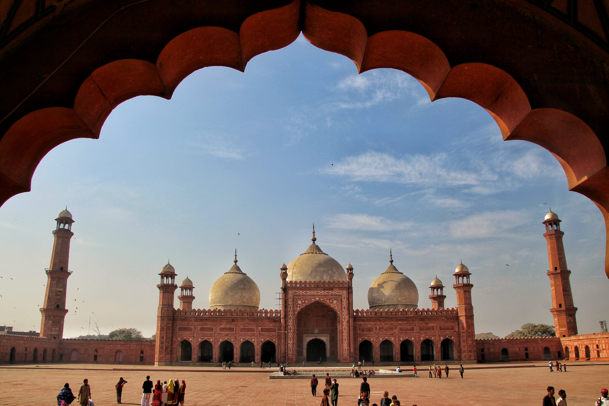

<div class="portfolio-single-load clearfix">
    <div class="custom-full-width-box">
        <div class="custom-container">
            <div class="custom-row align-items-center">
                <div class="custom-image-column">
                    
                </div>
                <div class="custom-text-column">
                    <h2 class="custom-heading">Badshahi Mosque</h2>
                    <p class="custom-paragraph">
                        The Badshahi Mosque is a Mughal-era imperial mosque located in Lahore, Punjab, Pakistan. It was constructed between 1671 and 1673 during the rule of Aurangzeb, opposite of the Lahore Fort on the northern outskirts of the historic Walled City.
                    </p>
                </div>
            </div>
        </div>
    </div><!-- .custom-full-width-box end -->

</div><!-- end single-project -->
